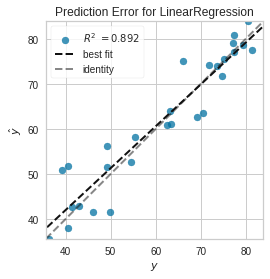

import numpy as np
import pandas as pd
import patsy
import statsmodels.api as sm
import statsmodels.formula.api as smf
from statsmodels.tsa.ar_model import AutoReg
from sklearn.model_selection import train_test_split
from sklearn.linear_model import LinearRegression
import matplotlib.pyplot as plot
from yellowbrick.regressor import prediction_error3 Notes
3.1 Introduction to Modeling Libraries in Python
- Use different libraries depending on the application
3.2 Interfacing Between pandas and Model Code
- Pandas for data loading and cleaning
- Modeling library for building model
df = pd.read_excel("data/Life Expectancy at Birth.xlsx", engine="openpyxl")
df.dropna(inplace=True)
df.columns = df.columns.map(lambda row: "_".join(row.lower().split(" ")))
sample = df.groupby("region").sample(n=20).sort_values(by="year")
sample| country | country_code | region | income_group | year | life_expectancy | |
|---|---|---|---|---|---|---|
| 187 | Poland | POL | Europe & Central Asia | High income | 1960 | 67.680488 |
| 248 | United States | USA | North America | High income | 1960 | 69.770732 |
| 444 | Pakistan | PAK | South Asia | Lower middle income | 1961 | 46.223220 |
| 274 | Australia | AUS | East Asia & Pacific | High income | 1961 | 70.973171 |
| 367 | Indonesia | IDN | East Asia & Pacific | Lower middle income | 1961 | 49.269805 |
| ... | ... | ... | ... | ... | ... | ... |
| 14254 | Czech Republic | CZE | Europe & Central Asia | High income | 2014 | 78.824390 |
| 14368 | Malaysia | MYS | East Asia & Pacific | Upper middle income | 2014 | 74.718293 |
| 14235 | Canada | CAN | North America | High income | 2014 | 81.956610 |
| 14381 | Oman | OMN | Middle East & North Africa | High income | 2014 | 77.085098 |
| 14509 | Comoros | COM | Sub-Saharan Africa | Low income | 2015 | 63.554024 |
140 rows × 6 columns
numeric_cols = ["year", "life_expectancy"]
df_num = sample[numeric_cols]
df_num| year | life_expectancy | |
|---|---|---|
| 187 | 1960 | 67.680488 |
| 248 | 1960 | 69.770732 |
| 444 | 1961 | 46.223220 |
| 274 | 1961 | 70.973171 |
| 367 | 1961 | 49.269805 |
| ... | ... | ... |
| 14254 | 2014 | 78.824390 |
| 14368 | 2014 | 74.718293 |
| 14235 | 2014 | 81.956610 |
| 14381 | 2014 | 77.085098 |
| 14509 | 2015 | 63.554024 |
140 rows × 2 columns
Turn a DataFrame into a NumPy array, use the to_numpy method:
df_num = df_num.to_numpy()isinstance(df_num, np.ndarray) # an ndarray of Python objectsTrueTo convert back to a DataFrame, as you may recall from earlier chapters, you can pass a two-dimensional ndarray with optional column names:
df2 = pd.DataFrame(sample.to_numpy(), columns=['country', 'country_code', 'region', 'income_group', 'year', 'life_expectancy'])
df2| country | country_code | region | income_group | year | life_expectancy | |
|---|---|---|---|---|---|---|
| 0 | Poland | POL | Europe & Central Asia | High income | 1960 | 67.680488 |
| 1 | United States | USA | North America | High income | 1960 | 69.770732 |
| 2 | Pakistan | PAK | South Asia | Lower middle income | 1961 | 46.22322 |
| 3 | Australia | AUS | East Asia & Pacific | High income | 1961 | 70.973171 |
| 4 | Indonesia | IDN | East Asia & Pacific | Lower middle income | 1961 | 49.269805 |
| ... | ... | ... | ... | ... | ... | ... |
| 135 | Czech Republic | CZE | Europe & Central Asia | High income | 2014 | 78.82439 |
| 136 | Malaysia | MYS | East Asia & Pacific | Upper middle income | 2014 | 74.718293 |
| 137 | Canada | CAN | North America | High income | 2014 | 81.95661 |
| 138 | Oman | OMN | Middle East & North Africa | High income | 2014 | 77.085098 |
| 139 | Comoros | COM | Sub-Saharan Africa | Low income | 2015 | 63.554024 |
140 rows × 6 columns
df_mix = sample.to_numpy()
df_mixarray([['Poland', 'POL', 'Europe & Central Asia', 'High income', 1960,
67.680487805],
['United States', 'USA', 'North America', 'High income', 1960,
69.770731707],
['Pakistan', 'PAK', 'South Asia', 'Lower middle income', 1961,
46.223219512],
['Australia', 'AUS', 'East Asia & Pacific', 'High income', 1961,
70.973170732],
['Indonesia', 'IDN', 'East Asia & Pacific', 'Lower middle income',
1961, 49.269804878],
['Kazakhstan', 'KAZ', 'Europe & Central Asia',
'Upper middle income', 1962, 59.199073171],
['Bangladesh', 'BGD', 'South Asia', 'Lower middle income', 1962,
47.08397561],
['Cuba', 'CUB', 'Latin America & Caribbean',
'Upper middle income', 1962, 65.138219512],
['Finland', 'FIN', 'Europe & Central Asia', 'High income', 1962,
68.577804878],
['Hungary', 'HUN', 'Europe & Central Asia', 'High income', 1962,
67.865853659],
['Azerbaijan', 'AZE', 'Europe & Central Asia',
'Upper middle income', 1963, 62.052],
['Nepal', 'NPL', 'South Asia', 'Low income', 1963, 36.425170732],
['Macedonia, FYR', 'MKD', 'Europe & Central Asia',
'Upper middle income', 1963, 62.459512195],
['Micronesia, Fed. Sts.', 'FSM', 'East Asia & Pacific',
'Lower middle income', 1963, 58.781585366],
['Tunisia', 'TUN', 'Middle East & North Africa',
'Lower middle income', 1963, 44.100780488],
['Antigua and Barbuda', 'ATG', 'Latin America & Caribbean',
'High income', 1963, 62.992585366],
['Maldives', 'MDV', 'South Asia', 'Upper middle income', 1964,
39.806902439],
['Saudi Arabia', 'SAU', 'Middle East & North Africa',
'High income', 1964, 47.811268293],
['Sao Tome and Principe', 'STP', 'Sub-Saharan Africa',
'Lower middle income', 1964, 52.674756098],
['Maldives', 'MDV', 'South Asia', 'Upper middle income', 1965,
40.49602439],
['Lebanon', 'LBN', 'Middle East & North Africa',
'Upper middle income', 1965, 64.715],
['Canada', 'CAN', 'North America', 'High income', 1967,
72.207804878],
['Lao PDR', 'LAO', 'East Asia & Pacific', 'Lower middle income',
1967, 45.316878049],
['Egypt, Arab Rep.', 'EGY', 'Middle East & North Africa',
'Lower middle income', 1968, 51.568682927],
['Iran, Islamic Rep.', 'IRN', 'Middle East & North Africa',
'Upper middle income', 1969, 50.158341463],
['Samoa', 'WSM', 'East Asia & Pacific', 'Upper middle income',
1970, 54.969512195],
['Botswana', 'BWA', 'Sub-Saharan Africa', 'Upper middle income',
1970, 54.443463415],
['Nepal', 'NPL', 'South Asia', 'Low income', 1970, 40.504439024],
['Bermuda', 'BMU', 'North America', 'High income', 1970, 70.29],
['Mexico', 'MEX', 'Latin America & Caribbean',
'Upper middle income', 1971, 61.819170732],
['Trinidad and Tobago', 'TTO', 'Latin America & Caribbean',
'High income', 1971, 65.260390244],
['St. Lucia', 'LCA', 'Latin America & Caribbean',
'Upper middle income', 1971, 63.443170732],
['Sudan', 'SDN', 'Sub-Saharan Africa', 'Lower middle income',
1971, 52.570146341],
['Nepal', 'NPL', 'South Asia', 'Low income', 1971, 41.088146341],
['Canada', 'CAN', 'North America', 'High income', 1972,
72.933902439],
['Swaziland', 'SWZ', 'Sub-Saharan Africa', 'Lower middle income',
1972, 49.151121951],
['Bhutan', 'BTN', 'South Asia', 'Lower middle income', 1973,
39.287487805],
['Peru', 'PER', 'Latin America & Caribbean',
'Upper middle income', 1973, 55.758],
['United States', 'USA', 'North America', 'High income', 1974,
71.956097561],
['Romania', 'ROU', 'Europe & Central Asia', 'Upper middle income',
1974, 69.499756098],
['New Caledonia', 'NCL', 'East Asia & Pacific', 'High income',
1975, 65.273170732],
['Uruguay', 'URY', 'Latin America & Caribbean', 'High income',
1975, 69.142829268],
['Papua New Guinea', 'PNG', 'East Asia & Pacific',
'Lower middle income', 1975, 49.270512195],
['United States', 'USA', 'North America', 'High income', 1976,
72.856097561],
['Afghanistan', 'AFG', 'South Asia', 'Low income', 1976,
39.575707317],
['Bhutan', 'BTN', 'South Asia', 'Lower middle income', 1977,
42.600829268],
['Lao PDR', 'LAO', 'East Asia & Pacific', 'Lower middle income',
1977, 48.208390244],
['Dominican Republic', 'DOM', 'Latin America & Caribbean',
'Upper middle income', 1977, 61.878902439],
['Guatemala', 'GTM', 'Latin America & Caribbean',
'Lower middle income', 1978, 56.391512195],
['Ireland', 'IRL', 'Europe & Central Asia', 'High income', 1978,
72.104756098],
['Ecuador', 'ECU', 'Latin America & Caribbean',
'Upper middle income', 1978, 61.925195122],
['Ecuador', 'ECU', 'Latin America & Caribbean',
'Upper middle income', 1979, 62.506902439],
['United States', 'USA', 'North America', 'High income', 1979,
73.804878049],
['Sudan', 'SDN', 'Sub-Saharan Africa', 'Lower middle income',
1979, 54.149073171],
['Bangladesh', 'BGD', 'South Asia', 'Lower middle income', 1979,
52.887292683],
['Egypt, Arab Rep.', 'EGY', 'Middle East & North Africa',
'Lower middle income', 1979, 57.641365854],
['Cyprus', 'CYP', 'Europe & Central Asia', 'High income', 1980,
74.756804878],
['Qatar', 'QAT', 'Middle East & North Africa', 'High income',
1980, 72.791658537],
['Bermuda', 'BMU', 'North America', 'High income', 1980,
72.304634146],
['Puerto Rico', 'PRI', 'Latin America & Caribbean', 'High income',
1980, 73.702292683],
['Myanmar', 'MMR', 'East Asia & Pacific', 'Lower middle income',
1981, 55.334390244],
['Qatar', 'QAT', 'Middle East & North Africa', 'High income',
1981, 73.087365854],
['St. Martin (French part)', 'MAF', 'Latin America & Caribbean',
'High income', 1982, 73.219512195],
['Kenya', 'KEN', 'Sub-Saharan Africa', 'Lower middle income',
1982, 58.799756098],
['Greenland', 'GRL', 'Europe & Central Asia', 'High income', 1982,
63.192682927],
['Indonesia', 'IDN', 'East Asia & Pacific', 'Lower middle income',
1983, 60.82295122],
['Algeria', 'DZA', 'Middle East & North Africa',
'Upper middle income', 1984, 63.117121951],
['Central African Republic', 'CAF', 'Sub-Saharan Africa',
'Low income', 1984, 49.825634146],
['New Caledonia', 'NCL', 'East Asia & Pacific', 'High income',
1984, 68.063414634],
['Somalia', 'SOM', 'Sub-Saharan Africa', 'Low income', 1984,
45.984365854],
['France', 'FRA', 'Europe & Central Asia', 'High income', 1984,
75.0],
['Lao PDR', 'LAO', 'East Asia & Pacific', 'Lower middle income',
1984, 50.544243902],
['India', 'IND', 'South Asia', 'Lower middle income', 1985,
55.860902439],
['Philippines', 'PHL', 'East Asia & Pacific',
'Lower middle income', 1985, 63.798560976],
['Kosovo', 'XKX', 'Europe & Central Asia', 'Lower middle income',
1985, 66.797560976],
['United Arab Emirates', 'ARE', 'Middle East & North Africa',
'High income', 1985, 70.076634146],
['Uzbekistan', 'UZB', 'Europe & Central Asia',
'Lower middle income', 1986, 66.942439024],
['United States', 'USA', 'North America', 'High income', 1987,
74.765853659],
['South Sudan', 'SSD', 'Sub-Saharan Africa', 'Low income', 1987,
41.50802439],
['Bhutan', 'BTN', 'South Asia', 'Lower middle income', 1988,
50.898487805],
['Canada', 'CAN', 'North America', 'High income', 1988,
76.809268293],
['Niger', 'NER', 'Sub-Saharan Africa', 'Low income', 1988,
42.962073171],
['Tunisia', 'TUN', 'Middle East & North Africa',
'Lower middle income', 1988, 67.607902439],
['Guatemala', 'GTM', 'Latin America & Caribbean',
'Lower middle income', 1989, 61.704658537],
['Sri Lanka', 'LKA', 'South Asia', 'Lower middle income', 1989,
69.534341463],
['Uruguay', 'URY', 'Latin America & Caribbean', 'High income',
1990, 72.539536585],
['United States', 'USA', 'North America', 'High income', 1990,
75.214634146],
['United States', 'USA', 'North America', 'High income', 1991,
75.365853659],
['Saudi Arabia', 'SAU', 'Middle East & North Africa',
'High income', 1991, 69.592195122],
['Philippines', 'PHL', 'East Asia & Pacific',
'Lower middle income', 1991, 65.481268293],
['Syrian Arab Republic', 'SYR', 'Middle East & North Africa',
'Lower middle income', 1991, 70.396],
['Libya', 'LBY', 'Middle East & North Africa',
'Upper middle income', 1992, 69.275073171],
['Albania', 'ALB', 'Europe & Central Asia', 'Upper middle income',
1992, 71.900804878],
['Bangladesh', 'BGD', 'South Asia', 'Lower middle income', 1993,
60.418804878],
['United States', 'USA', 'North America', 'High income', 1993,
75.419512195],
['Cameroon', 'CMR', 'Sub-Saharan Africa', 'Lower middle income',
1993, 53.524829268],
['Aruba', 'ABW', 'Latin America & Caribbean', 'High income', 1994,
73.535756098],
['Ghana', 'GHA', 'Sub-Saharan Africa', 'Lower middle income',
1994, 57.594829268],
['Canada', 'CAN', 'North America', 'High income', 1994,
77.86195122],
['Pakistan', 'PAK', 'South Asia', 'Lower middle income', 1995,
61.485292683],
['Rwanda', 'RWA', 'Sub-Saharan Africa', 'Low income', 1995,
31.634512195],
['Somalia', 'SOM', 'Sub-Saharan Africa', 'Low income', 1996,
48.077609756],
['Sierra Leone', 'SLE', 'Sub-Saharan Africa', 'Low income', 1998,
37.046804878],
['United Arab Emirates', 'ARE', 'Middle East & North Africa',
'High income', 1998, 73.920219512],
['Oman', 'OMN', 'Middle East & North Africa', 'High income', 1999,
71.910390244],
['Virgin Islands (U.S.)', 'VIR', 'Latin America & Caribbean',
'High income', 1999, 77.306170732],
['Spain', 'ESP', 'Europe & Central Asia', 'High income', 1999,
78.717073171],
['Swaziland', 'SWZ', 'Sub-Saharan Africa', 'Lower middle income',
2001, 47.434097561],
['Spain', 'ESP', 'Europe & Central Asia', 'High income', 2001,
79.368292683],
['United Arab Emirates', 'ARE', 'Middle East & North Africa',
'High income', 2003, 75.217219512],
['United States', 'USA', 'North America', 'High income', 2004,
77.487804878],
['Lebanon', 'LBN', 'Middle East & North Africa',
'Upper middle income', 2006, 77.246707317],
['Indonesia', 'IDN', 'East Asia & Pacific', 'Lower middle income',
2006, 67.367487805],
['Kazakhstan', 'KAZ', 'Europe & Central Asia',
'Upper middle income', 2006, 66.16097561],
['Canada', 'CAN', 'North America', 'High income', 2006,
80.292682927],
['Mauritania', 'MRT', 'Sub-Saharan Africa', 'Lower middle income',
2007, 61.139731707],
['Puerto Rico', 'PRI', 'Latin America & Caribbean', 'High income',
2008, 77.906463415],
['Togo', 'TGO', 'Sub-Saharan Africa', 'Low income', 2008,
56.005902439],
['Bangladesh', 'BGD', 'South Asia', 'Lower middle income', 2008,
69.277853659],
['Qatar', 'QAT', 'Middle East & North Africa', 'High income',
2008, 77.448756098],
['Hungary', 'HUN', 'Europe & Central Asia', 'High income', 2008,
73.702439024],
['Fiji', 'FJI', 'East Asia & Pacific', 'Upper middle income',
2009, 69.202853659],
['Aruba', 'ABW', 'Latin America & Caribbean', 'High income', 2009,
74.818146341],
['Malaysia', 'MYS', 'East Asia & Pacific', 'Upper middle income',
2009, 74.038414634],
['Canada', 'CAN', 'North America', 'High income', 2010,
81.197560976],
['Nicaragua', 'NIC', 'Latin America & Caribbean',
'Lower middle income', 2010, 73.581731707],
['United States', 'USA', 'North America', 'High income', 2011,
78.641463415],
['Bangladesh', 'BGD', 'South Asia', 'Lower middle income', 2011,
70.47195122],
['Seychelles', 'SYC', 'Sub-Saharan Africa', 'High income', 2011,
72.724390244],
['Ireland', 'IRL', 'Europe & Central Asia', 'High income', 2012,
80.846341463],
['India', 'IND', 'South Asia', 'Lower middle income', 2012,
67.289878049],
['New Zealand', 'NZL', 'East Asia & Pacific', 'High income', 2013,
81.407317073],
['Bermuda', 'BMU', 'North America', 'High income', 2013,
80.572439024],
['Myanmar', 'MMR', 'East Asia & Pacific', 'Lower middle income',
2014, 65.857853659],
['Pakistan', 'PAK', 'South Asia', 'Lower middle income', 2014,
66.183365854],
['Czech Republic', 'CZE', 'Europe & Central Asia', 'High income',
2014, 78.824390244],
['Malaysia', 'MYS', 'East Asia & Pacific', 'Upper middle income',
2014, 74.718292683],
['Canada', 'CAN', 'North America', 'High income', 2014,
81.956609756],
['Oman', 'OMN', 'Middle East & North Africa', 'High income', 2014,
77.085097561],
['Comoros', 'COM', 'Sub-Saharan Africa', 'Low income', 2015,
63.55402439]], dtype=object)isinstance(df_mix, np.ndarray) # an ndarray of Python objectsTrueUse a subset by using loc indexing with to_numpy:
sample.loc[:, numeric_cols].to_numpy()array([[1960. , 67.6804878 ],
[1960. , 69.77073171],
[1961. , 46.22321951],
[1961. , 70.97317073],
[1961. , 49.26980488],
[1962. , 59.19907317],
[1962. , 47.08397561],
[1962. , 65.13821951],
[1962. , 68.57780488],
[1962. , 67.86585366],
[1963. , 62.052 ],
[1963. , 36.42517073],
[1963. , 62.4595122 ],
[1963. , 58.78158537],
[1963. , 44.10078049],
[1963. , 62.99258537],
[1964. , 39.80690244],
[1964. , 47.81126829],
[1964. , 52.6747561 ],
[1965. , 40.49602439],
[1965. , 64.715 ],
[1967. , 72.20780488],
[1967. , 45.31687805],
[1968. , 51.56868293],
[1969. , 50.15834146],
[1970. , 54.9695122 ],
[1970. , 54.44346341],
[1970. , 40.50443902],
[1970. , 70.29 ],
[1971. , 61.81917073],
[1971. , 65.26039024],
[1971. , 63.44317073],
[1971. , 52.57014634],
[1971. , 41.08814634],
[1972. , 72.93390244],
[1972. , 49.15112195],
[1973. , 39.2874878 ],
[1973. , 55.758 ],
[1974. , 71.95609756],
[1974. , 69.4997561 ],
[1975. , 65.27317073],
[1975. , 69.14282927],
[1975. , 49.2705122 ],
[1976. , 72.85609756],
[1976. , 39.57570732],
[1977. , 42.60082927],
[1977. , 48.20839024],
[1977. , 61.87890244],
[1978. , 56.39151219],
[1978. , 72.1047561 ],
[1978. , 61.92519512],
[1979. , 62.50690244],
[1979. , 73.80487805],
[1979. , 54.14907317],
[1979. , 52.88729268],
[1979. , 57.64136585],
[1980. , 74.75680488],
[1980. , 72.79165854],
[1980. , 72.30463415],
[1980. , 73.70229268],
[1981. , 55.33439024],
[1981. , 73.08736585],
[1982. , 73.21951219],
[1982. , 58.7997561 ],
[1982. , 63.19268293],
[1983. , 60.82295122],
[1984. , 63.11712195],
[1984. , 49.82563415],
[1984. , 68.06341463],
[1984. , 45.98436585],
[1984. , 75. ],
[1984. , 50.5442439 ],
[1985. , 55.86090244],
[1985. , 63.79856098],
[1985. , 66.79756098],
[1985. , 70.07663415],
[1986. , 66.94243902],
[1987. , 74.76585366],
[1987. , 41.50802439],
[1988. , 50.89848781],
[1988. , 76.80926829],
[1988. , 42.96207317],
[1988. , 67.60790244],
[1989. , 61.70465854],
[1989. , 69.53434146],
[1990. , 72.53953658],
[1990. , 75.21463415],
[1991. , 75.36585366],
[1991. , 69.59219512],
[1991. , 65.48126829],
[1991. , 70.396 ],
[1992. , 69.27507317],
[1992. , 71.90080488],
[1993. , 60.41880488],
[1993. , 75.41951219],
[1993. , 53.52482927],
[1994. , 73.5357561 ],
[1994. , 57.59482927],
[1994. , 77.86195122],
[1995. , 61.48529268],
[1995. , 31.63451219],
[1996. , 48.07760976],
[1998. , 37.04680488],
[1998. , 73.92021951],
[1999. , 71.91039024],
[1999. , 77.30617073],
[1999. , 78.71707317],
[2001. , 47.43409756],
[2001. , 79.36829268],
[2003. , 75.21721951],
[2004. , 77.48780488],
[2006. , 77.24670732],
[2006. , 67.3674878 ],
[2006. , 66.16097561],
[2006. , 80.29268293],
[2007. , 61.13973171],
[2008. , 77.90646342],
[2008. , 56.00590244],
[2008. , 69.27785366],
[2008. , 77.4487561 ],
[2008. , 73.70243902],
[2009. , 69.20285366],
[2009. , 74.81814634],
[2009. , 74.03841463],
[2010. , 81.19756098],
[2010. , 73.58173171],
[2011. , 78.64146342],
[2011. , 70.47195122],
[2011. , 72.72439024],
[2012. , 80.84634146],
[2012. , 67.28987805],
[2013. , 81.40731707],
[2013. , 80.57243902],
[2014. , 65.85785366],
[2014. , 66.18336585],
[2014. , 78.82439024],
[2014. , 74.71829268],
[2014. , 81.95660976],
[2014. , 77.08509756],
[2015. , 63.55402439]])There is a nonnumeric column in our example dataset. Let’s convert income_group to dummy variables. But this can be error prone.
dummies = pd.get_dummies(sample.income_group, prefix='income_group')
data_with_dummies = sample.drop('income_group', axis=1).join(dummies)
data_with_dummies| country | country_code | region | year | life_expectancy | income_group_High income | income_group_Low income | income_group_Lower middle income | income_group_Upper middle income | |
|---|---|---|---|---|---|---|---|---|---|
| 187 | Poland | POL | Europe & Central Asia | 1960 | 67.680488 | 1 | 0 | 0 | 0 |
| 248 | United States | USA | North America | 1960 | 69.770732 | 1 | 0 | 0 | 0 |
| 444 | Pakistan | PAK | South Asia | 1961 | 46.223220 | 0 | 0 | 1 | 0 |
| 274 | Australia | AUS | East Asia & Pacific | 1961 | 70.973171 | 1 | 0 | 0 | 0 |
| 367 | Indonesia | IDN | East Asia & Pacific | 1961 | 49.269805 | 0 | 0 | 1 | 0 |
| ... | ... | ... | ... | ... | ... | ... | ... | ... | ... |
| 14254 | Czech Republic | CZE | Europe & Central Asia | 2014 | 78.824390 | 1 | 0 | 0 | 0 |
| 14368 | Malaysia | MYS | East Asia & Pacific | 2014 | 74.718293 | 0 | 0 | 0 | 1 |
| 14235 | Canada | CAN | North America | 2014 | 81.956610 | 1 | 0 | 0 | 0 |
| 14381 | Oman | OMN | Middle East & North Africa | 2014 | 77.085098 | 1 | 0 | 0 | 0 |
| 14509 | Comoros | COM | Sub-Saharan Africa | 2015 | 63.554024 | 0 | 1 | 0 | 0 |
140 rows × 9 columns
3.3 Creating Model Descriptions with Patsy
Patsy is a Python package that allows data transformations using arbitrary Python code.
Patsy describes statistical models with a string-based “formula syntax”:
y ~ x0 + x1where x0, x1 are terms in the design matrix created for the model.
outcome, predictors = patsy.dmatrices(
'life_expectancy ~ income_group + region + year', data=sample
)outcome is a DesignMatrix object that represents life_expectancy which is the variable we want to predict.
outcomeDesignMatrix with shape (140, 1)
life_expectancy
67.68049
69.77073
46.22322
70.97317
49.26980
59.19907
47.08398
65.13822
68.57780
67.86585
62.05200
36.42517
62.45951
58.78159
44.10078
62.99259
39.80690
47.81127
52.67476
40.49602
64.71500
72.20780
45.31688
51.56868
50.15834
54.96951
54.44346
40.50444
70.29000
61.81917
[110 rows omitted]
Terms:
'life_expectancy' (column 0)
(to view full data, use np.asarray(this_obj))predictors is a DesignMatrix object that represents the combination of income_group, region, year.
We have 140 examples, 11 features:
- Intercept (column 0): an array of 1s
income group: columns 1 - 4region: columns 4-10year: columns 10
The extra columns for income_group and regions are from One-Hot encoding, a process by which categorical variables are converted into a form that could be provided to ML algorithms.
predictorsDesignMatrix with shape (140, 11)
Columns:
['Intercept',
'income_group[T.Low income]',
'income_group[T.Lower middle income]',
'income_group[T.Upper middle income]',
'region[T.Europe & Central Asia]',
'region[T.Latin America & Caribbean]',
'region[T.Middle East & North Africa]',
'region[T.North America]',
'region[T.South Asia]',
'region[T.Sub-Saharan Africa]',
'year']
Terms:
'Intercept' (column 0)
'income_group' (columns 1:4)
'region' (columns 4:10)
'year' (column 10)
(to view full data, use np.asarray(this_obj))These Patsy DesignMatrix instances are NumPy ndarrays with additional metadata:
np.asarray(predictors)array([[1.000e+00, 0.000e+00, 0.000e+00, ..., 0.000e+00, 0.000e+00,
1.960e+03],
[1.000e+00, 0.000e+00, 0.000e+00, ..., 0.000e+00, 0.000e+00,
1.960e+03],
[1.000e+00, 0.000e+00, 1.000e+00, ..., 1.000e+00, 0.000e+00,
1.961e+03],
...,
[1.000e+00, 0.000e+00, 0.000e+00, ..., 0.000e+00, 0.000e+00,
2.014e+03],
[1.000e+00, 0.000e+00, 0.000e+00, ..., 0.000e+00, 0.000e+00,
2.014e+03],
[1.000e+00, 1.000e+00, 0.000e+00, ..., 0.000e+00, 1.000e+00,
2.015e+03]])np.asarray(outcome)array([[67.6804878 ],
[69.77073171],
[46.22321951],
[70.97317073],
[49.26980488],
[59.19907317],
[47.08397561],
[65.13821951],
[68.57780488],
[67.86585366],
[62.052 ],
[36.42517073],
[62.4595122 ],
[58.78158537],
[44.10078049],
[62.99258537],
[39.80690244],
[47.81126829],
[52.6747561 ],
[40.49602439],
[64.715 ],
[72.20780488],
[45.31687805],
[51.56868293],
[50.15834146],
[54.9695122 ],
[54.44346341],
[40.50443902],
[70.29 ],
[61.81917073],
[65.26039024],
[63.44317073],
[52.57014634],
[41.08814634],
[72.93390244],
[49.15112195],
[39.2874878 ],
[55.758 ],
[71.95609756],
[69.4997561 ],
[65.27317073],
[69.14282927],
[49.2705122 ],
[72.85609756],
[39.57570732],
[42.60082927],
[48.20839024],
[61.87890244],
[56.39151219],
[72.1047561 ],
[61.92519512],
[62.50690244],
[73.80487805],
[54.14907317],
[52.88729268],
[57.64136585],
[74.75680488],
[72.79165854],
[72.30463415],
[73.70229268],
[55.33439024],
[73.08736585],
[73.21951219],
[58.7997561 ],
[63.19268293],
[60.82295122],
[63.11712195],
[49.82563415],
[68.06341463],
[45.98436585],
[75. ],
[50.5442439 ],
[55.86090244],
[63.79856098],
[66.79756098],
[70.07663415],
[66.94243902],
[74.76585366],
[41.50802439],
[50.89848781],
[76.80926829],
[42.96207317],
[67.60790244],
[61.70465854],
[69.53434146],
[72.53953658],
[75.21463415],
[75.36585366],
[69.59219512],
[65.48126829],
[70.396 ],
[69.27507317],
[71.90080488],
[60.41880488],
[75.41951219],
[53.52482927],
[73.5357561 ],
[57.59482927],
[77.86195122],
[61.48529268],
[31.63451219],
[48.07760976],
[37.04680488],
[73.92021951],
[71.91039024],
[77.30617073],
[78.71707317],
[47.43409756],
[79.36829268],
[75.21721951],
[77.48780488],
[77.24670732],
[67.3674878 ],
[66.16097561],
[80.29268293],
[61.13973171],
[77.90646342],
[56.00590244],
[69.27785366],
[77.4487561 ],
[73.70243902],
[69.20285366],
[74.81814634],
[74.03841463],
[81.19756098],
[73.58173171],
[78.64146342],
[70.47195122],
[72.72439024],
[80.84634146],
[67.28987805],
[81.40731707],
[80.57243902],
[65.85785366],
[66.18336585],
[78.82439024],
[74.71829268],
[81.95660976],
[77.08509756],
[63.55402439]])Suppress the intercept by adding the term + 0 to the model:
y, X = patsy.dmatrices(
'life_expectancy ~ income_group + region + year + 0', data=sample
)
XDesignMatrix with shape (140, 11)
Columns:
['income_group[High income]',
'income_group[Low income]',
'income_group[Lower middle income]',
'income_group[Upper middle income]',
'region[T.Europe & Central Asia]',
'region[T.Latin America & Caribbean]',
'region[T.Middle East & North Africa]',
'region[T.North America]',
'region[T.South Asia]',
'region[T.Sub-Saharan Africa]',
'year']
Terms:
'income_group' (columns 0:4)
'region' (columns 4:10)
'year' (column 10)
(to view full data, use np.asarray(this_obj))The Patsy objects can be passed directly into algorithms like numpy.linalg.lstsq, which performs an ordinary least squares regression. The model metadata is retained in the design_info attribute:
coef, resid, _, _ = np.linalg.lstsq(outcome, predictors)
coef/tmp/ipykernel_133/2774571045.py:1: FutureWarning: `rcond` parameter will change to the default of machine precision times ``max(M, N)`` where M and N are the input matrix dimensions.
To use the future default and silence this warning we advise to pass `rcond=None`, to keep using the old, explicitly pass `rcond=-1`.
coef, resid, _, _ = np.linalg.lstsq(outcome, predictors)array([[1.51964589e-02, 9.81119953e-04, 4.41412174e-03, 2.65860943e-03,
2.40182610e-03, 2.29746257e-03, 2.26362465e-03, 2.58305159e-03,
1.77260076e-03, 1.76133204e-03, 3.02004208e+01]])You can reattach the model column names to the fitted coefficients to obtain a Series, for example:
coef = pd.Series(coef.squeeze(), index=outcome.design_info.column_names)ValueError: Length of values (11) does not match length of index (1)3.3.1 Data Transformations in Patsy Formulas
You can mix Python code into your Patsy formulas:
outcome, predictors = patsy.dmatrices(
'np.round(life_expectancy) ~ income_group + region + year', data=sample
)
outcomeDesignMatrix with shape (140, 1)
np.round(life_expectancy)
68
70
46
71
49
59
47
65
69
68
62
36
62
59
44
63
40
48
53
40
65
72
45
52
50
55
54
41
70
62
[110 rows omitted]
Terms:
'np.round(life_expectancy)' (column 0)
(to view full data, use np.asarray(this_obj))Some commonly used variable transformations include standardizing (to mean 0 and variance 1) and centering (subtracting the mean). Patsy has built-in functions for this purpose:
outcome, predictors = patsy.dmatrices(
'life_expectancy ~ income_group + region + center(year)', data=sample
)
predictorsDesignMatrix with shape (140, 11)
Columns:
['Intercept',
'income_group[T.Low income]',
'income_group[T.Lower middle income]',
'income_group[T.Upper middle income]',
'region[T.Europe & Central Asia]',
'region[T.Latin America & Caribbean]',
'region[T.Middle East & North Africa]',
'region[T.North America]',
'region[T.South Asia]',
'region[T.Sub-Saharan Africa]',
'center(year)']
Terms:
'Intercept' (column 0)
'income_group' (columns 1:4)
'region' (columns 4:10)
'center(year)' (column 10)
(to view full data, use np.asarray(this_obj))The patsy.build_design_matrices function can apply transformations to new out-of-sample data using the saved information from the original in-sample dataset:
outcome, predictors = patsy.dmatrices(
'life_expectancy ~ income_group + region + center(year)', data=sample
)
new_df = df.groupby("region").sample(n=20).sort_values(by="year")
new_predictors = patsy.build_design_matrices([predictors.design_info], new_df)
new_predictors[DesignMatrix with shape (140, 11)
Columns:
['Intercept',
'income_group[T.Low income]',
'income_group[T.Lower middle income]',
'income_group[T.Upper middle income]',
'region[T.Europe & Central Asia]',
'region[T.Latin America & Caribbean]',
'region[T.Middle East & North Africa]',
'region[T.North America]',
'region[T.South Asia]',
'region[T.Sub-Saharan Africa]',
'center(year)']
Terms:
'Intercept' (column 0)
'income_group' (columns 1:4)
'region' (columns 4:10)
'center(year)' (column 10)
(to view full data, use np.asarray(this_obj))]When you want to add columns from a dataset by name, you must wrap them in the special I function:
outcome, predictors = patsy.dmatrices(
'life_expectancy ~ income_group + region + I(year + year)', data=sample # nonsense
)3.4 Categorical Data and Patsy
When you use nonnumeric terms in a Patsy formula, they are converted to dummy variables by default.
outcome, predictors = patsy.dmatrices(
'life_expectancy ~ income_group + region + year', data=sample
)
predictorsDesignMatrix with shape (140, 11)
Columns:
['Intercept',
'income_group[T.Low income]',
'income_group[T.Lower middle income]',
'income_group[T.Upper middle income]',
'region[T.Europe & Central Asia]',
'region[T.Latin America & Caribbean]',
'region[T.Middle East & North Africa]',
'region[T.North America]',
'region[T.South Asia]',
'region[T.Sub-Saharan Africa]',
'year']
Terms:
'Intercept' (column 0)
'income_group' (columns 1:4)
'region' (columns 4:10)
'year' (column 10)
(to view full data, use np.asarray(this_obj))If you omit the intercept from the model, then columns for each category value will be included in the model design matrix:
outcome, predictors = patsy.dmatrices(
'life_expectancy ~ region + income_group + year + 0', data=sample # will have all levels but only for the FIRST categorical variable
)
predictorsDesignMatrix with shape (140, 11)
Columns:
['region[East Asia & Pacific]',
'region[Europe & Central Asia]',
'region[Latin America & Caribbean]',
'region[Middle East & North Africa]',
'region[North America]',
'region[South Asia]',
'region[Sub-Saharan Africa]',
'income_group[T.Low income]',
'income_group[T.Lower middle income]',
'income_group[T.Upper middle income]',
'year']
Terms:
'region' (columns 0:7)
'income_group' (columns 7:10)
'year' (column 10)
(to view full data, use np.asarray(this_obj))Numeric columns can be interpreted as categorical with the C function:
outcome, predictors = patsy.dmatrices(
'life_expectancy ~ income_group + region + C(year)', data=sample
)
predictorsDesignMatrix with shape (140, 60)
Columns:
['Intercept',
'income_group[T.Low income]',
'income_group[T.Lower middle income]',
'income_group[T.Upper middle income]',
'region[T.Europe & Central Asia]',
'region[T.Latin America & Caribbean]',
'region[T.Middle East & North Africa]',
'region[T.North America]',
'region[T.South Asia]',
'region[T.Sub-Saharan Africa]',
'C(year)[T.1961]',
'C(year)[T.1962]',
'C(year)[T.1963]',
'C(year)[T.1964]',
'C(year)[T.1965]',
'C(year)[T.1967]',
'C(year)[T.1968]',
'C(year)[T.1969]',
'C(year)[T.1970]',
'C(year)[T.1971]',
'C(year)[T.1972]',
'C(year)[T.1973]',
'C(year)[T.1974]',
'C(year)[T.1975]',
'C(year)[T.1976]',
'C(year)[T.1977]',
'C(year)[T.1978]',
'C(year)[T.1979]',
'C(year)[T.1980]',
'C(year)[T.1981]',
'C(year)[T.1982]',
'C(year)[T.1983]',
'C(year)[T.1984]',
'C(year)[T.1985]',
'C(year)[T.1986]',
'C(year)[T.1987]',
'C(year)[T.1988]',
'C(year)[T.1989]',
'C(year)[T.1990]',
'C(year)[T.1991]',
'C(year)[T.1992]',
'C(year)[T.1993]',
'C(year)[T.1994]',
'C(year)[T.1995]',
'C(year)[T.1996]',
'C(year)[T.1998]',
'C(year)[T.1999]',
'C(year)[T.2001]',
'C(year)[T.2003]',
'C(year)[T.2004]',
'C(year)[T.2006]',
'C(year)[T.2007]',
'C(year)[T.2008]',
'C(year)[T.2009]',
'C(year)[T.2010]',
'C(year)[T.2011]',
'C(year)[T.2012]',
'C(year)[T.2013]',
'C(year)[T.2014]',
'C(year)[T.2015]']
Terms:
'Intercept' (column 0)
'income_group' (columns 1:4)
'region' (columns 4:10)
'C(year)' (columns 10:60)
(to view full data, use np.asarray(this_obj))Include interaction terms of the form key1:key2:
outcome, predictors = patsy.dmatrices(
'life_expectancy ~ income_group + region + year + income_group:region', data=sample
)
predictorsDesignMatrix with shape (140, 29)
Columns:
['Intercept',
'income_group[T.Low income]',
'income_group[T.Lower middle income]',
'income_group[T.Upper middle income]',
'region[T.Europe & Central Asia]',
'region[T.Latin America & Caribbean]',
'region[T.Middle East & North Africa]',
'region[T.North America]',
'region[T.South Asia]',
'region[T.Sub-Saharan Africa]',
'income_group[T.Low income]:region[T.Europe & Central Asia]',
'income_group[T.Lower middle income]:region[T.Europe & Central Asia]',
'income_group[T.Upper middle income]:region[T.Europe & Central Asia]',
'income_group[T.Low income]:region[T.Latin America & Caribbean]',
'income_group[T.Lower middle income]:region[T.Latin America & Caribbean]',
'income_group[T.Upper middle income]:region[T.Latin America & Caribbean]',
'income_group[T.Low income]:region[T.Middle East & North Africa]',
'income_group[T.Lower middle income]:region[T.Middle East & North Africa]',
'income_group[T.Upper middle income]:region[T.Middle East & North Africa]',
'income_group[T.Low income]:region[T.North America]',
'income_group[T.Lower middle income]:region[T.North America]',
'income_group[T.Upper middle income]:region[T.North America]',
'income_group[T.Low income]:region[T.South Asia]',
'income_group[T.Lower middle income]:region[T.South Asia]',
'income_group[T.Upper middle income]:region[T.South Asia]',
'income_group[T.Low income]:region[T.Sub-Saharan Africa]',
'income_group[T.Lower middle income]:region[T.Sub-Saharan Africa]',
'income_group[T.Upper middle income]:region[T.Sub-Saharan Africa]',
'year']
Terms:
'Intercept' (column 0)
'income_group' (columns 1:4)
'region' (columns 4:10)
'income_group:region' (columns 10:28)
'year' (column 28)
(to view full data, use np.asarray(this_obj))3.5 Introduction to statsmodels
statsmodels is a Python library for fitting many kinds of statistical models, performing statistical tests, and data exploration and visualization.
- Linear models, generalized linear models, and robust linear models
- Linear mixed effects models
- Analysis of variance (ANOVA) methods
- Time series processes and state space models
- Generalized method of moments
The sm.add_constant function can add an intercept column to an existing matrix:
predictor_model = sm.add_constant(predictors)
predictor_modelThe sm.OLS class can fit an ordinary least squares linear regression. The model’s fit method returns a regression results object containing estimated model parameters and other diagnostics:
outcome, predictors = patsy.dmatrices(
'life_expectancy ~ income_group + region + year', data=sample
)
predictors_org = np.asarray(predictors)
rng = np.random.default_rng(seed=12345)
def dnorm(mean, variance, size=1):
if isinstance(size, int):
size = size,
return mean + np.sqrt(variance) * rng.standard_normal(*size)
predictors = np.c_[np.hstack(tuple(predictors_org[:, [2]])),
np.hstack(tuple(predictors_org[:, [0]])),
np.hstack(tuple(predictors_org[:, [1]]))]
predictors = np.asarray(predictors)
eps = dnorm(0, 0.1, size=len(sample))
beta = dnorm(45,82, size=3)
outcome = np.dot(predictors, beta) + epsX_model = sm.add_constant(X)model = sm.OLS(y, X)results = model.fit()
print(results.summary()) OLS Regression Results
==============================================================================
Dep. Variable: life_expectancy R-squared: 0.835
Model: OLS Adj. R-squared: 0.823
Method: Least Squares F-statistic: 65.48
Date: Fri, 28 Oct 2022 Prob (F-statistic): 1.19e-45
Time: 20:29:40 Log-Likelihood: -420.62
No. Observations: 140 AIC: 863.2
Df Residuals: 129 BIC: 895.6
Df Model: 10
Covariance Type: nonrobust
========================================================================================================
coef std err t P>|t| [0.025 0.975]
--------------------------------------------------------------------------------------------------------
income_group[High income] -601.0677 53.808 -11.171 0.000 -707.527 -494.608
income_group[Low income] -620.7862 53.651 -11.571 0.000 -726.936 -514.637
income_group[Lower middle income] -609.9033 53.643 -11.370 0.000 -716.038 -503.769
income_group[Upper middle income] -606.9144 53.554 -11.333 0.000 -712.872 -500.957
region[T.Europe & Central Asia] 5.3402 1.741 3.066 0.003 1.895 8.786
region[T.Latin America & Caribbean] 3.2563 1.712 1.903 0.059 -0.130 6.643
region[T.Middle East & North Africa] 1.4021 1.675 0.837 0.404 -1.913 4.717
region[T.North America] 6.2191 1.894 3.283 0.001 2.471 9.967
region[T.South Asia] -4.7101 1.684 -2.797 0.006 -8.042 -1.378
region[T.Sub-Saharan Africa] -5.0216 1.824 -2.753 0.007 -8.630 -1.413
year 0.3371 0.027 12.481 0.000 0.284 0.391
==============================================================================
Omnibus: 11.871 Durbin-Watson: 1.996
Prob(Omnibus): 0.003 Jarque-Bera (JB): 13.271
Skew: -0.586 Prob(JB): 0.00131
Kurtosis: 3.950 Cond. No. 4.96e+05
==============================================================================
Notes:
[1] Standard Errors assume that the covariance matrix of the errors is correctly specified.
[2] The condition number is large, 4.96e+05. This might indicate that there are
strong multicollinearity or other numerical problems.results = smf.ols('life_expectancy ~ income_group + region + year', data=sample).fit()
results.paramsIntercept -601.067727
income_group[T.Low income] -19.718427
income_group[T.Lower middle income] -8.835585
income_group[T.Upper middle income] -5.846721
region[T.Europe & Central Asia] 5.340173
region[T.Latin America & Caribbean] 3.256349
region[T.Middle East & North Africa] 1.402143
region[T.North America] 6.219114
region[T.South Asia] -4.710066
region[T.Sub-Saharan Africa] -5.021556
year 0.337079
dtype: float64results.tvaluesIntercept -11.170682
income_group[T.Low income] -9.011465
income_group[T.Lower middle income] -6.207760
income_group[T.Upper middle income] -4.309918
region[T.Europe & Central Asia] 3.066470
region[T.Latin America & Caribbean] 1.902550
region[T.Middle East & North Africa] 0.836912
region[T.North America] 3.283279
region[T.South Asia] -2.797053
region[T.Sub-Saharan Africa] -2.753270
year 12.480643
dtype: float64results.predict(sample[:5])187 64.948099
248 65.827040
444 46.399354
274 59.945005
367 51.109421
dtype: float643.6 Estimating Time Series Processes
Another class of models in statsmodels is for time series analysis.
init_x = 4
values = [init_x, init_x]
N = 1000
# AR(2) structure with two lags
b0 = 0.8
b1 = -0.4
noise = dnorm(0, 0.1, N)
for i in range(N):
new_x = values[-1] * b0 + values[-2] * b1 + noise[i]
values.append(new_x)
# fit with more lags
MAXLAGS = 5
model = AutoReg(values, MAXLAGS)
results = model.fit()
results.paramsarray([ 0.01141668, 0.8278958 , -0.42492365, -0.01487685, 0.03721318,
-0.03644228])3.7 Introduction to scikit-learn
scikit-learn is one of the most widely used and trusted general-purpose Python machine learning toolkits.
X_train, X_test, y_train, y_test = train_test_split(
sample[['income_group', 'region', 'year']], sample[['life_expectancy']], test_size=0.2, random_state=42)# make sure there are no missing values
print(X_test.isna().sum())
print(y_test.isna().sum())income_group 0
region 0
year 0
dtype: int64
life_expectancy 0
dtype: int64# can also do it with patsy
outcome, predictors = patsy.dmatrices(
'life_expectancy ~ income_group + region + year', data=sample
)
X_train, X_test, y_train, y_test = train_test_split(
predictors, outcome, test_size=0.2, random_state=42)
y_train = y_train.squeeze()
y_test = y_test.squeeze()# impute_value = train['Age'].median()
# train['Age'] = train['Age'].fillna(impute_value)
# test['Age'] = test['Age'].fillna(impute_value)model = LinearRegression().fit(X_train, y_train)
model.fit(X_train, y_train)LinearRegression()In a Jupyter environment, please rerun this cell to show the HTML representation or trust the notebook.
On GitHub, the HTML representation is unable to render, please try loading this page with nbviewer.org.
LinearRegression()
y_predict = model.predict(X_test)
y_predictarray([78.63905681, 41.6710372 , 61.07560873, 77.12346239, 56.24225717,
60.82576811, 42.99395169, 41.6710372 , 74.1469048 , 75.46981928,
75.04709887, 71.69375575, 63.94037441, 51.82387157, 83.87519146,
42.66322307, 35.6275935 , 37.94269386, 63.56521171, 80.89863386,
50.99752407, 62.57302584, 58.22662891, 51.61205646, 77.52772236,
52.57565731, 79.10783413, 73.92796809])outcomeDesignMatrix with shape (140, 1)
life_expectancy
67.68049
69.77073
46.22322
70.97317
49.26980
59.19907
47.08398
65.13822
68.57780
67.86585
62.05200
36.42517
62.45951
58.78159
44.10078
62.99259
39.80690
47.81127
52.67476
40.49602
64.71500
72.20780
45.31688
51.56868
50.15834
54.96951
54.44346
40.50444
70.29000
61.81917
[110 rows omitted]
Terms:
'life_expectancy' (column 0)
(to view full data, use np.asarray(this_obj))3.8 Going rogue
Using yellowbrick:
- y is the real avalues
- y hat is predicted
- black dotted line is fitted line created by the model
- grey dotted line is if the predicted values == real values
model = LinearRegression()
visualizer = prediction_error(model, X_train, y_train, X_test, y_test)